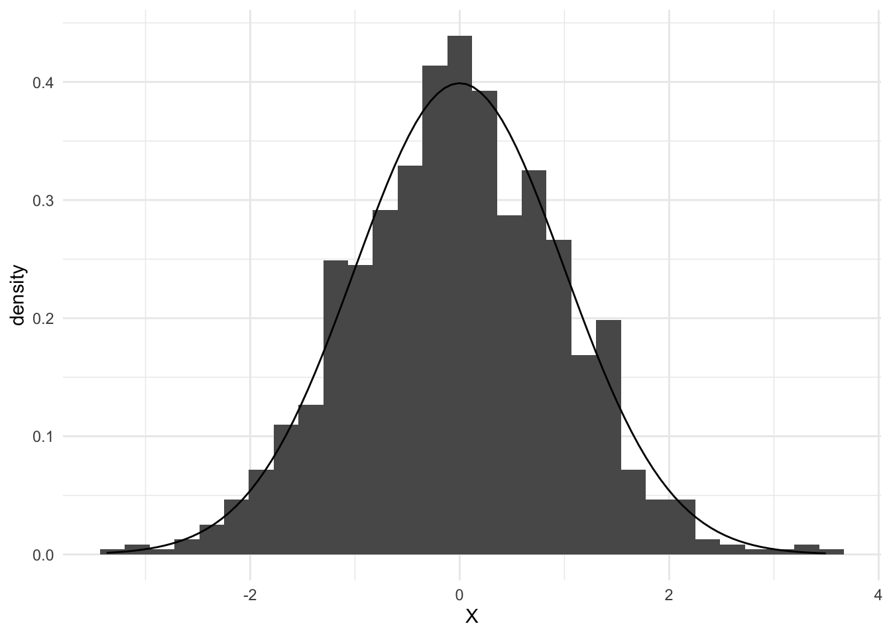

Chapter 2 Univariate data
In general, generating univariate data is relatively straightforward. R is full of functions that allow to generate data given a prespecified distribution, of which only the parameters have to be determined. As one of the simplest examples, consider the variable \(X\), which follows a normal distribution with mean \(\mu\) and variance \(\sigma^2\)
\[
X \sim \mathcal{N}(\mu, \sigma^2),
\]
such that
\[
f(X) = \frac{1}{\sqrt{2\pi\sigma^2}} \exp \Bigg{\{} - {\frac{(X-\mu)^2}{2\sigma^2}} \Bigg{\}}.
\]
In R, one can easily sample from this distribution, using the rnorm function that is in-built, with parameters n, mean and sd. In practice, if we want to generate \(n = 1000\) values from a normal distribution with mean \(\mu = 0\) and standard deviation \(\sqrt{\sigma^2} = \sigma = 1\). Hence, \(X\) is said to follow a standard normal distribution.
It is simply verified that \(X\) indeed seems to follow a univariate normal distribution by asking for some summary statistics.
## Min. 1st Qu. Median Mean 3rd Qu. Max.
## -3.37174 -0.67546 -0.01313 -0.02582 0.66400 3.49530Additionally, we can plot the histogram of the variable \(X\) to assess its shape.
library(tidyverse)
library(ggthemes)
ggplot(mapping = aes(x = X)) +
geom_histogram(aes(y = ..density..)) +
stat_function(fun = dnorm, args = list(mean = mean, sd = sd)) +
theme_minimal()